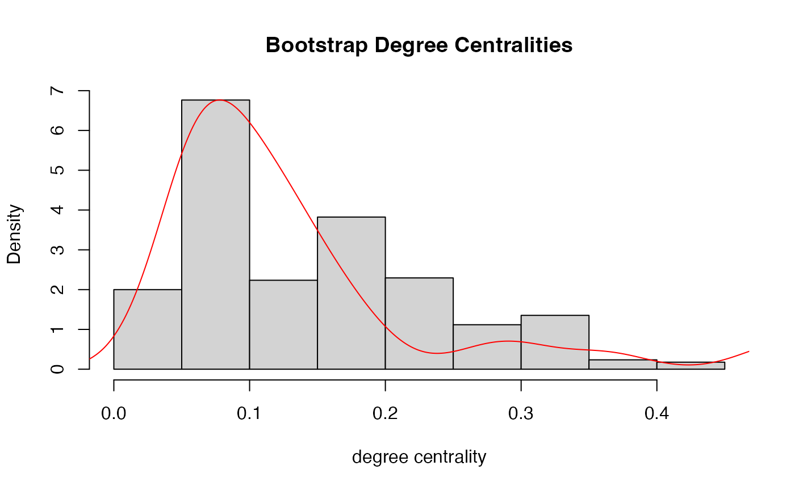

Compute Bootstrap Centrality Statistics from Bootstrap Samples
Source:R/get-bootstrap-centrality.R
get_bootstrap_centrality.RdThis function takes bootstrap samples of graph data from bootstrap_ functions and computes specified centrality statistics for each sample.
Usage
get_bootstrap_centrality(
boot.result,
func.name,
package.name = NULL,
func.args = NULL,
obj.type = NULL
)Arguments
- boot.result
A list of bootstrap samples, where each sample represents a graph in a specified format (e.g., adjacency matrix, edgelist). This is output from the
bootstrap_function.- func.name
A character string specifying the centrality function to apply (e.g.,
"degree","betweenness"). Seeget_centralityfor details.- package.name
An optional character string indicating the package name containing the centrality function. Defaults to
NULL(assumingfunc.nameis available). Seeget_centralityfor details.- func.args
An optional list of additional arguments to pass to the centrality function. Defaults to
NULL. Seeget_centralityfor details.- obj.type
A character string specifying the type of
objin each bootstrap sample. Options include"igraph","matrix","dgCMatrix", or"edgelist". This is theoutput.typeof thebootstrap_function.
Value
A list of length B, where each element is the bootstrap centrality statistic result from applying the specified centrality statistic function.
Details
Calculates bootstrap centrality statistics from give bootstrap samples and a specified centrality statistic.
Examples
library(igraph)
data("karate")
set.seed(89)
boot.result <- bootstrap_latent_space(
karate, d = 2, B = 10)
#Calculate degree centrality (from igraph)
central.result <- get_bootstrap_centrality(boot.result,
func.name = "degree",
package.name = "igraph",
func.args = list(normalized = TRUE))
central.result[[1]]
#> Mr Hi Actor 2 Actor 3 Actor 4 Actor 5 Actor 6 Actor 7
#> 0.33333333 0.30303030 0.24242424 0.18181818 0.09090909 0.09090909 0.09090909
#> Actor 8 Actor 9 Actor 10 Actor 11 Actor 12 Actor 13 Actor 14
#> 0.18181818 0.24242424 0.06060606 0.09090909 0.06060606 0.09090909 0.27272727
#> Actor 15 Actor 16 Actor 17 Actor 18 Actor 19 Actor 20 Actor 21
#> 0.12121212 0.06060606 0.03030303 0.09090909 0.03030303 0.06060606 0.09090909
#> Actor 22 Actor 23 Actor 24 Actor 25 Actor 26 Actor 27 Actor 28
#> 0.12121212 0.18181818 0.18181818 0.12121212 0.06060606 0.09090909 0.06060606
#> Actor 29 Actor 30 Actor 31 Actor 32 Actor 33 John A
#> 0.21212121 0.12121212 0.06060606 0.18181818 0.36363636 0.33333333
#plot bootstrap centralities vs original centrality
hist(unlist(central.result), freq = FALSE,
xlab = "degree centrality", main = "Bootstrap Degree Centralities")
lines(density(igraph::degree(karate, normalized = TRUE)), col = "red")
